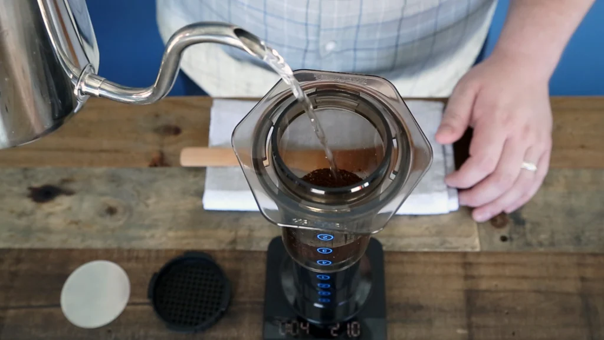

Aeropress Coffee

Description
This is my favorite Aeropress coffee recipe. This produces the best tasting coffee, in my opinion.
Ingredients
- Aeropress
- 2x paper filters
- 18g coffee - medium-fine grind
- 210g filtered water - boiled to 205 degrees
This recipe uses a 1:12 brew ratio, using the inverted brew method.
Steps
- Heat water to 205°.
- Prepare Aeropress by inserting the plunger about 1/2-inch into the chamber.
- Leave the cap off for now with the filters in it ready to go and set the AeroPress down on the scale, plunger side down.
- Grind coffee at last possible moment for freshest taste. Put your ground coffee into the chamber.
- Start your timer when you pour in the filtered water. Be sure to add all of the water at once.
- At the one minute mark, stir for 10 seconds and then place the cap on top of the AeroPress and lock it into place.
- At 1:30, flip the AeroPress over (carefully! I put invert my coffee cup and put it on top of the Aeropress then flip both together to prevent spillage) atop your cup and start to press into it. Press slowly so that the last bit of liquid leaves the AeroPress at about 2 minutes.
- Enjoy!
Feel free to experiment with grind size and water temperature to your liking!